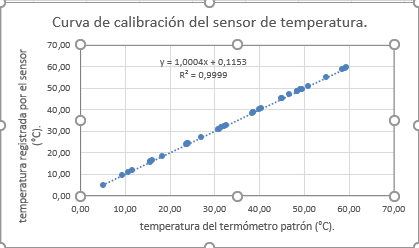
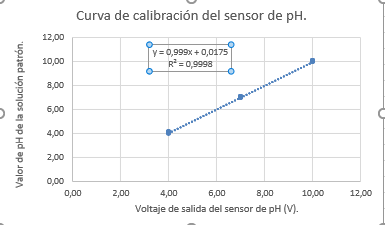
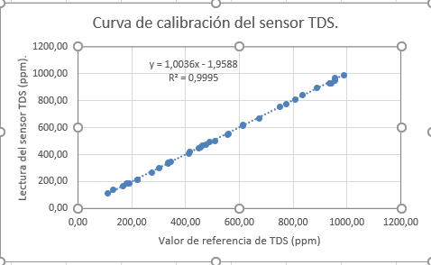
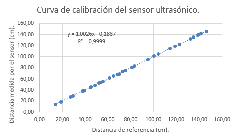
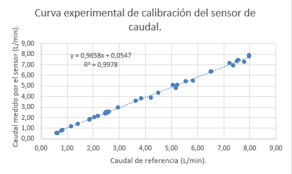
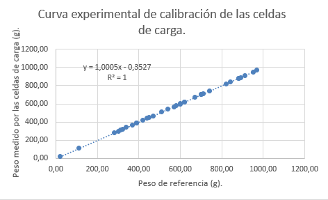

Resultados y calibración
Qué medimos, contra qué patrón y qué tan cerca quedó cada sensor.
Resumen. Cada sensor se probó con 35 mediciones frente a un patrón. Temperatura, pH, TDS y nivel quedaron dentro de la tolerancia definida. El caudalímetro y las celdas de carga siguen en evaluación experimental: el primero porque su error máximo supera la tolerancia, y las segundas porque falta verificar cada celda por separado.
Resultados por sensor
Regresión lineal entre la lectura del sensor y el valor de referencia.
| Sensor | Puntos | Pendiente | Intercepto | R² | Error máximo | Tolerancia | Estado |
|---|---|---|---|---|---|---|---|
| Temperatura | 35 | 1,0004 | 0,1153 °C | 0,9999 | 0,40 °C | ±0,5 °C | Dentro de tolerancia |
| pH | 35 | 0,9990 | 0,0175 | 0,9998 | 0,07 pH | ±0,1 pH | Dentro de tolerancia |
| TDS | 35 | 1,0036 | −1,9588 ppm | 0,9995 | 13 ppm | ±15 ppm | Dentro de tolerancia |
| Nivel ultrasónico | 35 | 1,0026 | −0,1837 cm | 0,9999 | 0,8 cm | ±1 cm | Dentro de tolerancia |
| Caudal YF-S201 | 35 | 0,9658 | 0,0547 L/min | 0,9978 | 0,46 L/min | ±0,1 L/min | En evaluación |
| Celdas de carga | 35 | 1,0005 | −0,3527 g | 0,999996 | 1,2 g | ±2 g | En evaluación |
Curvas de calibración
Cada gráfica enfrenta la lectura del sensor con el valor de referencia. Si el ajuste fuera perfecto, todos los puntos caerían sobre la recta.






Por qué el caudal y las celdas siguen en evaluación
Un R² alto no basta para declarar un sensor calibrado. En el caudalímetro la recta se ajusta bien, pero en algunos puntos el error llega a 0,46 L/min, casi cinco veces la tolerancia de ±0,1 L/min. Hay que repetir el método volumétrico, revisar el factor de pulsos, controlar el tiempo de recolección y probarlo con la bomba y las mangueras reales de la escalera.
En las celdas de carga el error máximo de 1,2 g cabe en la tolerancia de ±2 g, pero la regresión es conjunta. Falta comprobar cada celda por separado, su tara, su repetibilidad y que las lecturas se mantengan estables al reiniciar el sistema.
Consumo eléctrico del módulo de control
Estimación con valores típicos de las hojas de datos. No es una medición y no incluye la bomba ni el calentador.
| Componente | Consumo aproximado |
|---|---|
| ESP32 | 80 mA |
| Sensor de pH | 5 mA |
| Sensor TDS | 3 mA |
| Sensor de temperatura DS18B20 | 1 mA |
| Sensor ultrasónico | 2 mA |
| Otros (conexiones y señalización) | 10 mA |
| Total estimado | unos 101 mA a 5 V, cerca de 0,5 W |
Qué sigue
Las pruebas que faltan para cerrar el prototipo.
Caudal
Repetir el método volumétrico y bajar el error máximo por debajo de la tolerancia.
Celdas de carga
Verificar cada celda por separado, con tara y repetibilidad.
Ecuaciones en el firmware
Confirmar que las ecuaciones de calibración estén cargadas en cada sensor.
Cultivo real
Validar el sistema completo con solución nutritiva y lechuga.
Referencia sobre el agua: la literatura reporta ahorros de hasta 90 % en sistemas hidropónicos recirculados frente al cultivo en suelo (FAO, 2018). Es un dato de referencia, no un resultado de este prototipo.